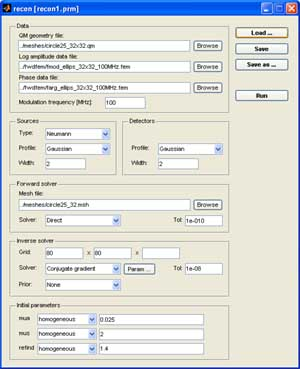

| Image Reconstruction in Diffuse Optical Tomography |
|

The graphical interface for the reconstruction wizard. |
A Quick ExampleThis example demonstrates how to use the GUI interface for setting up reconstruction parameters. It performs a 2D reconstruction from simulated measurements. In the following checklist, $TOASTDIR refers to the TOAST root directory.
|